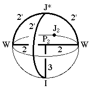
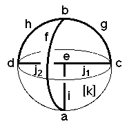

222
222
 224
224 Orbifold Atlas Home Page
Orbifold Atlas Home Page
 Crystallographic Topology Home Page
Crystallographic Topology Home Page
Underlying Topological Space: D3; Figure Pseudo-Symmetry (FPS): m
Euclidean 3-Orbifold with Invariant-Lattice-Complex Letters
(left), Wyckoff Site Letters (right)
 
| FPS | Mult | Lattice Comp | Group Graph | Wyckoff Set | 2[4]Cover |
| 2-1 | I | 32' | a | ||
| 6-1 | J* | 2'2'2' | b | ||
| 6-2 | W | 22' | c, d | ||
| 8-1 | P2 | 322 | e | ||
| 12-1 | I6[-]J*2 | 3<2'>2'2' | f:a-b | ||
| 12-2 | W2[-]J*2 | 2<2'>2'2' | g:c-b, h:d-b | ||
| 16-1 | I8[-]P22 | 2'<3>22 | i:a-e | ||
| 24-2 | W4[-]P23 | 2'<2>32 | j1:c-e, j2:d-e | ||
| 24-1 | m | k:fgh | |||
| 48 | 1 | l:ij,k | |||
| 24-1 | I12[J2]J*4 | 2*=32'<1'>2'2'2' | k1:a-b | #229(h) | |
| 48-1 | P26[-]J22 | 2*=322<1>1' | l1:e-k1 | [226(e? or f?)] | |
| m | 48-1 | m* | l2:fik1l1 | #229(k) | |
| Struct-Mult | Critical Points | Heegaard Surf | Wyckoff Cut | |
| BCC -1 | I/P2/WW/J* | H2'm{22} | j1 j2 f |
222
224
Orbifold Atlas Home Page
Crystallographic Topology Home Page
Page last revised: